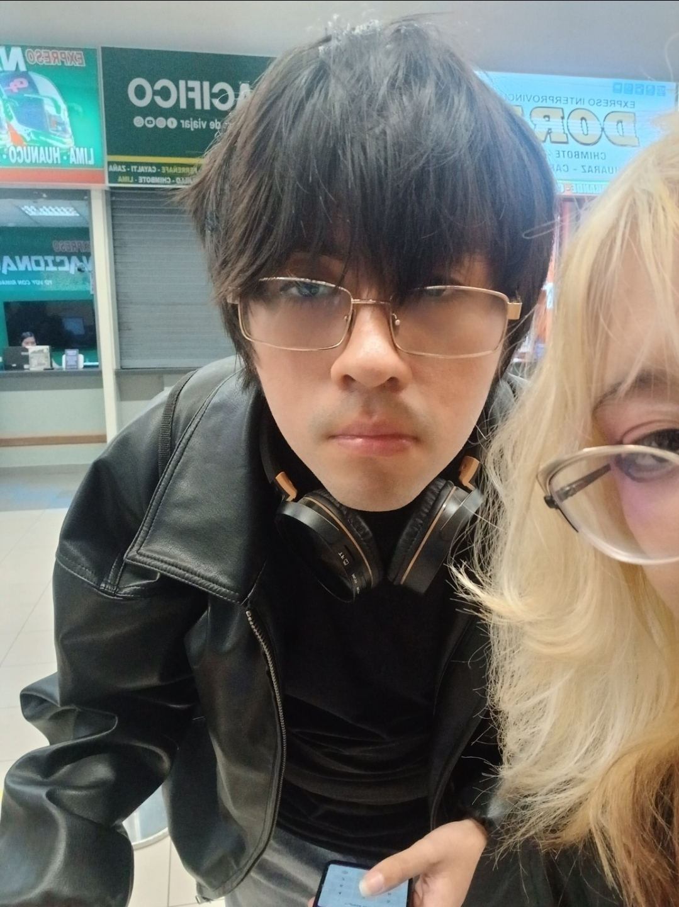
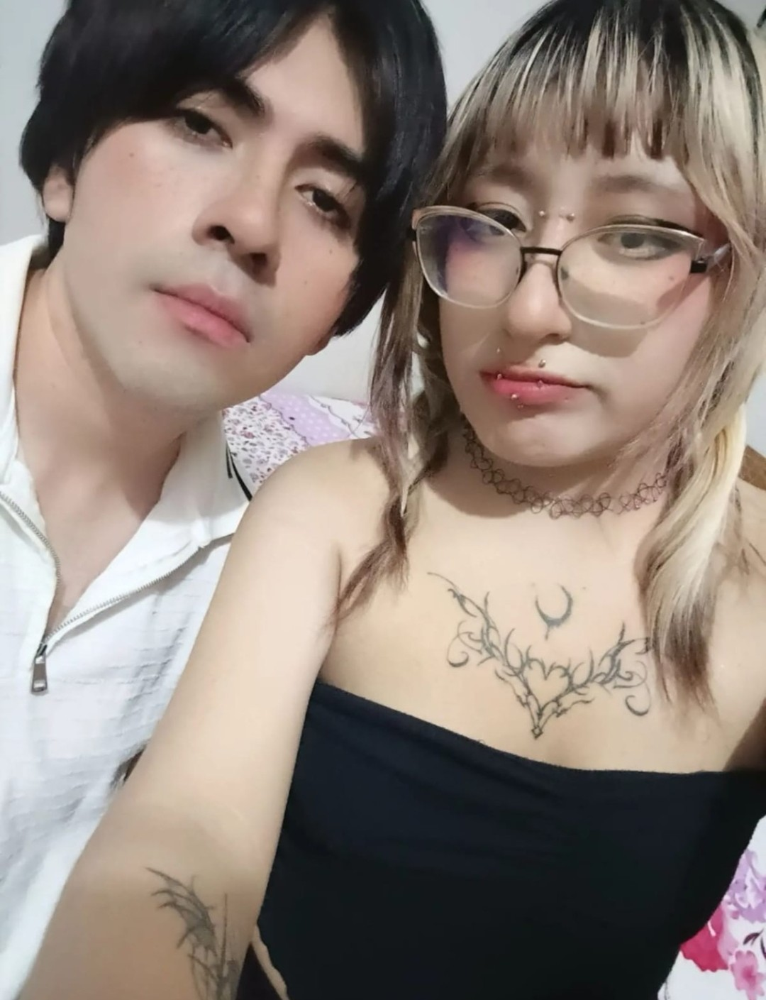
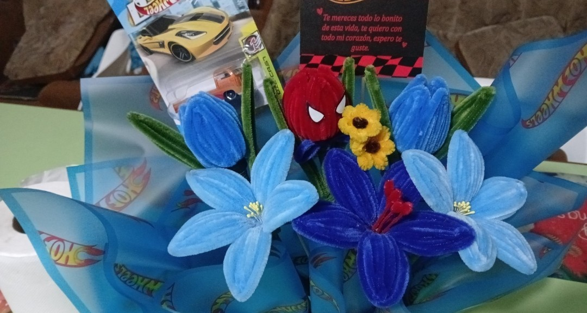
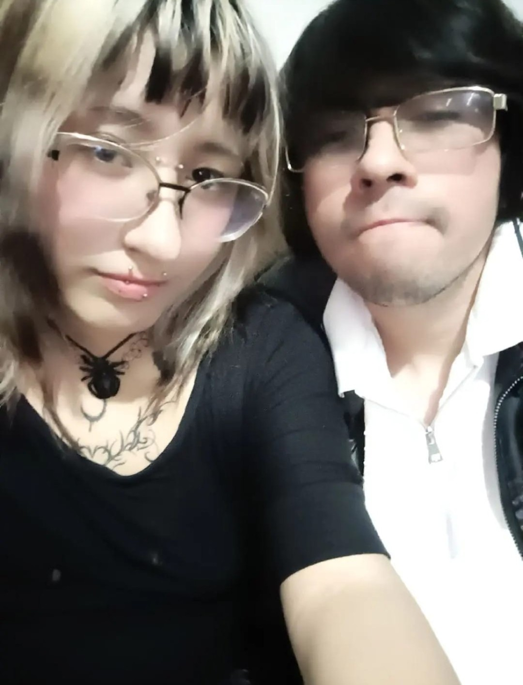
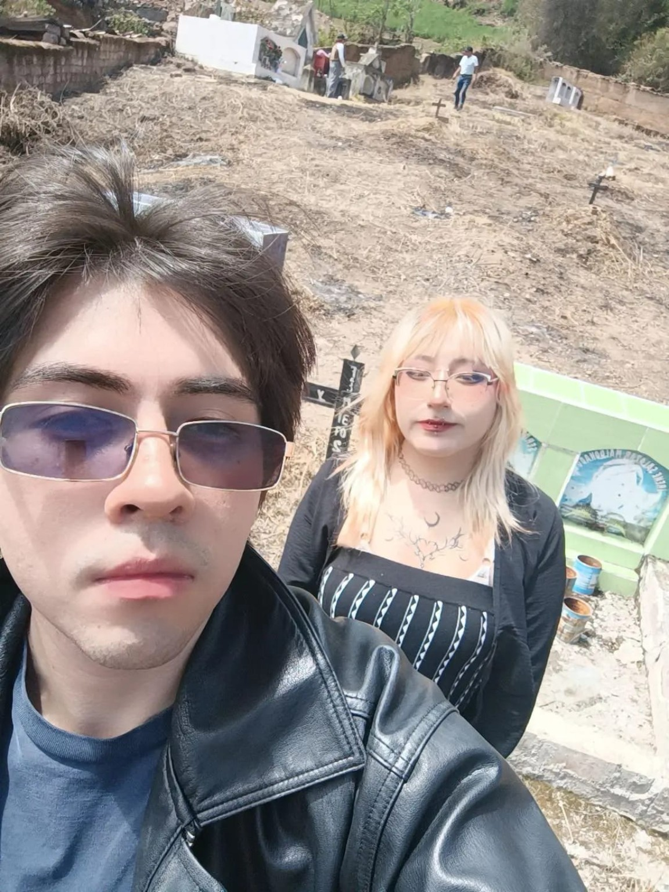

Nuestro primer viaje de esposos
Ay mi amor, que lindo te veías, siempre soñé con viajar con la persona que amo, lo cumpli a tu lado, que sean millones de viajes, que sean muchos te amo, que sea toda nuestra vida, no sabes cuanto te amo papita💗

El más wapetón
No tengo palabras para decir lo hermoso que eres, lo feliz que me hace verte, poder decir que eres mi eposo y que quiero pasar el resto de mi vida a tu lado, oye amor, de velda que wapo eres

El día de los jowils 💗
Aun recuerdo todas las vueltas que me di en busca del mejor ramo, en ese con el que estaba segura de que cuando lo miraras estaras tan feliz, quisiera poder darte todo de mi, mas de lo que tengo y lo que soy, es que te mereces mas amor, Te amo 💗

El pucherito de macriado ma lindo 💗
Solo quiero que sepas que nunca pense verte ser un engreido ni poner tus pucheritos de macriado, supongo que por eso se me apachurra el corazoncito cuando te veo hacerlo, te ves precioso amor, te ves exactamente como el amorcito de mi vida, es ahí donde quiero estar por el resto de mi vida 💗

Nuestro segundo viaje de esposos 💗
No sabía que podia amarte mas de lo que ya lo hacía, es mi viaje favorito, fuiste tan lindo amor, te veías precioso, podria morirme de frío con tal de quedarme ahí, a tu ladito en tanto frío en el cementerio viendo el atardecer tomados de la mano, no fue un sueño amor, fue realidad y ahora es de mis recuerdos favoritos, no tengo palabras amor, pero te daría mi corazón, ya lo tienes amor.
Una cartita para mi papita
Hay algo que quiero que leas...